1 Objetivos
Al finalizar la práctica podremos:
- Crear cuentas de usuario en MySQL.
- Comprender la estructura ‘usuario’@‘origen’.
- Restringir una cuenta a:
- conexiones locales;
- una dirección IP concreta;
- una red completa;
- cualquier origen.
- Crear roles y asignarles privilegios.
- Asignar uno o varios roles a diferentes usuarios.
- Conceder privilegios directamente, sin utilizar roles.
- Aplicar privilegios en los niveles de base de datos, tabla y columna.
- Activar roles de forma predeterminada.
- Comprobar los permisos efectivos de cada cuenta.
- Verificar que las operaciones no autorizadas son rechazadas.
- Revocar privilegios y eliminar cuentas y roles.
2 Escenario de la práctica
Continuamos con la base de datos academia_it creada y alimentada en la práctica anterior. No volvemos a crear la base de datos, las tablas ni los datos iniciales.
El servidor mysql está en la ip 10.0.20.101
2.1 Base de datos academia_it
Utilizaremos las tablas:
alumnosprofesoresasignaturascursoscurso_asignaturamatriculasnotas
Crearemos los siguientes roles:
| Rol | Función |
|---|---|
rol_lectura |
Consultar toda la base de datos |
rol_profesor |
Consultar información e insertar o modificar notas |
rol_secretaria |
Gestionar datos de los alumnos |
rol_auditor |
Consultar toda la información sin modificarla |
rol_admin_academia |
Administrar completamente la base de datos academia_it |
También crearemos cuentas con distintos orígenes permitidos:
| Cuenta | Origen permitido |
|---|---|
profesor_local |
Solo desde el propio servidor |
secretaria_red |
Desde cualquier equipo de \(10.0.20.0/24\) |
auditor_ip |
Solo desde \(10.0.20.50\) |
consulta_global |
Desde cualquier origen accesible |
gestor_local |
Solo desde el servidor |
temporal_directo |
Solo desde el servidor y sin utilizar roles |
La dirección IP utilizada como ejemplo para el servidor MySQL será: \(10.0.20.101\)
Debe sustituirse por la dirección real del servidor.
3 Concepto fundamental: usuario y origen
En MySQL, una cuenta no está formada únicamente por el nombre del usuario. Está formada por: \(\text{'usuario'}\text{@}\text{'origen'}\)
Por ejemplo: \(\text{'ana'}\text{@}\text{'localhost'}\) y: \(\text{'ana'}\text{@}\text{'10.0.20.50'}\) son dos cuentas diferentes, aunque ambas se llamen ana.
La primera puede conectarse localmente y la segunda únicamente desde la IP indicada. MySQL admite nombres de host, direcciones IPv4 o IPv6 y redes expresadas mediante máscara; desde MySQL 8.0.23 también admite notación CIDR para IPv4.
3.1 Orígenes habituales
| Definición | Significado |
|---|---|
'usuario'@'localhost' |
Conexión local |
'usuario'@'127.0.0.1' |
Conexión por la interfaz de loopback IPv4 |
'usuario'@'10.0.20.50' |
Solo desde esa IP |
'usuario'@'10.0.20.0/255.255.255.0' |
Desde toda la red \(10.0.20.0/24\) |
'usuario'@'10.0.20.0/24' |
La misma red, en MySQL 8.0.23 o posterior |
'usuario'@'%' |
Desde cualquier origen |
El comodín % continúa funcionando en MySQL 8.0, pero su utilización en el componente host está obsoleta desde MySQL 8.0.35. Para entornos reales es preferible definir IP concretas, redes conocidas, una VPN o reglas de firewall restrictivas.
4 Controles que intervienen en una conexión remota
Para conectarnos remotamente no basta con crear una cuenta como: \(\text{'secretaria_red'@'10.0.20.0/255.255.255.0'}\). Deben cumplirse cuatro condiciones:
- El servidor MySQL escucha en una interfaz de red
- La red y el firewall permiten llegar al puerto \(3306\)
- Existe una cuenta
usuario@origenque coincide - La cuenta tiene privilegios para ejecutar la operación
MySQL realiza primero la comprobación de conexión e identidad y, después, comprueba si la cuenta tiene privilegios suficientes para cada sentencia ejecutada.
5 Requisitos
Necesitaremos:
- MySQL Server 8.x (8.0 o 8.4). Ejecutad
SELECT VERSION();y verificad contra la versión instalada los ejemplos de conexión, configuración y TLS. - Acceso administrativo mediante
rootu otra cuenta con permisos para:- crear usuarios;
- conceder privilegios.
- Al menos un equipo cliente para probar conexiones remotas.
- Conectividad IP entre cliente y servidor.
- Cliente de MySQL instalado en los equipos desde los que se realizarán las pruebas.
Academia IT debe tener las siete tablas y los CSV de la práctica anterior cargados. Necesitamos al menos una matrícula sin registro en notas para probar INSERT. Con los CSV corregidos, las matrículas \(26\) y \(27\) cumplen esta condición. No confundáis una fila con nota NULL con una matrícula sin fila en notas.
6 Preparación del acceso remoto
Esta parte solo es necesaria si vamos a conectarnos desde otros equipos.
6.1 Comprobar la dirección en la que escucha MySQL
Entramos como administrador:
sudo mysqlO bien:
mysql -u root -pConsultamos la configuración:
SHOW VARIABLES LIKE 'bind_address';
SHOW VARIABLES LIKE 'port';Si bind_address tiene el valor 127.0.0.1, MySQL solo acepta conexiones TCP/IP locales.
6.2 Configuración en Ubuntu o Debian
Editamos:
sudo nano /etc/mysql/mysql.conf.d/mysqld.cnfUna opción recomendable es hacer que MySQL escuche solamente en la IP del servidor:
bind-address = 10.0.20.101Nota: Verificar contra la versión instalada: la ruta indicada corresponde a instalaciones habituales del paquete MySQL. Comprobad el fichero utilizado por vuestro servicio antes de editarlo. Si el acceso remoto ya funciona, no cambiéis su configuración.
En un laboratorio aislado también podría utilizarse:
bind-address = 0.0.0.00.0.0.0 significa que MySQL escuchará en todas las interfaces IPv4 del servidor. MySQL 8.0.13 y versiones posteriores permiten indicar varias direcciones separadas por comas.
Reiniciamos el servicio:
sudo systemctl restart mysqlComprobamos su estado:
sudo systemctl status mysqlY verificamos que escucha en el puerto \(3306\):
sudo ss -lntp | grep 33066.3 Configurar UFW si está activo
Comprobamos su estado:
sudo ufw statusPara permitir el acceso al puerto \(3306\) únicamente desde la red del aula:
sudo ufw allow proto tcp from 10.0.20.0/24 to any port 3306Comprobamos la regla:
sudo ufw status numberedUbuntu permite limitar una regla de UFW a una IP o a una subred concreta, lo que resulta preferible a abrir el puerto para cualquier origen.
La restricción del firewall y la restricción 'usuario'@'origen' se complementan. Una cuenta definida con @'%' no puede atravesar un firewall que bloquee su dirección IP.
7 Comprobar la base de datos existente
Entramos en MySQL con una cuenta administrativa:
mysql -u root -pSeleccionamos la base de datos ya creada:
USE academia_it;
SHOW TABLES;
-- Debe devolver 7 para las tablas base del modelo.
SELECT COUNT(*) AS numero_tablas
FROM information_schema.tables
WHERE table_schema = 'academia_it'
AND table_type = 'BASE TABLE';Resultado esperado: alumnos, profesores, asignaturas, cursos, curso_asignatura, matriculas y notas. Si faltan tablas, completad la práctica anterior antes de continuar.
SELECT COUNT(*) AS alumnos FROM academia_it.alumnos;
SELECT COUNT(*) AS matriculas FROM academia_it.matriculas;
SELECT COUNT(*) AS notas FROM academia_it.notas;8 Recordar las relaciones de Academia IT
Cada matrícula identifica un alumno y una asignatura de un curso. Una nota se relaciona únicamente con su matrícula. El profesor se asigna en curso_asignatura, no en asignaturas.
SHOW CREATE TABLE academia_it.matriculas;
SHOW CREATE TABLE academia_it.notas;
SHOW CREATE TABLE academia_it.curso_asignatura;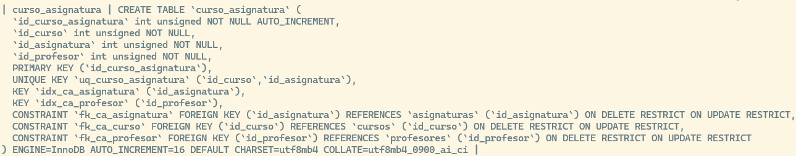
8.1 Campos que utilizaremos
- alumnos:
id_alumno,nombre,apellido1,apellido2,emailyfecha_alta. - matriculas:
id_matricula,id_alumnoeid_curso_asignatura. - notas:
id_nota,id_matricula,nota,fecha_evaluacionyobservaciones. - curso_asignatura:
id_curso_asignatura,id_curso,id_asignaturaeid_profesor.
8.2 Consultar el historial sin duplicar vínculos
La siguiente consulta enlaza las siete tablas existentes. Se ejecuta como administrador y muestra también matrículas que aún no tienen un registro de calificación.
SELECT m.id_matricula, a.nombre, a.apellido1,
c.codigo AS curso, s.nombre AS asignatura,
p.nombre AS profesor, n.nota, n.fecha_evaluacion
FROM academia_it.matriculas AS m
JOIN academia_it.alumnos AS a
ON a.id_alumno = m.id_alumno
JOIN academia_it.curso_asignatura AS ca
ON ca.id_curso_asignatura = m.id_curso_asignatura
JOIN academia_it.cursos AS c
ON c.id_curso = ca.id_curso
JOIN academia_it.asignaturas AS s
ON s.id_asignatura = ca.id_asignatura
JOIN academia_it.profesores AS p
ON p.id_profesor = ca.id_profesor
LEFT JOIN academia_it.notas AS n
ON n.id_matricula = m.id_matricula
ORDER BY m.id_matricula;9 Preparar pruebas sin cambiar los datos iniciales
Las pruebas de escritura se harán sobre InnoDB con START TRANSACTION y terminarán con ROLLBACK. Así se deshacen las inserciones y modificaciones de prueba. Los valores AUTO_INCREMENT consumidos pueden dejar huecos: es normal.
Ejecutad cada operación por separado. Un error previsto de permisos no es motivo para saltar la reversión. No ejecutéis DDL ni administración de cuentas entre START TRANSACTION y ROLLBACK: esas sentencias pueden provocar un COMMIT implícito. (Ver apartado Transacciones en MySQL en el capítulo sobre Comandos DML)
-- Identificar una matrícula sin fila en notas.
SELECT m.id_matricula
FROM academia_it.matriculas AS m
LEFT JOIN academia_it.notas AS n
ON n.id_matricula = m.id_matricula
WHERE n.id_nota IS NULL
ORDER BY m.id_matricula;Resultado esperado con los CSV corregidos: \(26\) y \(27\). Si no devuelve filas, revisad los datos de la práctica anterior. No borréis una nota existente para preparar esta prueba.
Antes de crear roles o usuarios, comprobad que los nombres de esta práctica no pertenecen a cuentas que debáis conservar. Si ya existen, revisadlo con el docente para evitar reutilizar permisos anteriores.
SELECT User, Host FROM mysql.user
WHERE User IN ('profesor_local', 'secretaria_red', 'auditor_ip',
'consulta_global', 'gestor_local', 'temporal_directo',
'rol_lectura', 'rol_profesor', 'rol_secretaria',
'rol_auditor', 'rol_admin_academia');10 Crear los roles
Un rol de MySQL es una colección de privilegios identificada mediante un nombre. Los privilegios pueden concederse al rol y, posteriormente, el rol puede asignarse a diferentes cuentas.
Creamos los cinco roles:
CREATE ROLE
'rol_lectura',
'rol_profesor',
'rol_secretaria',
'rol_auditor',
'rol_admin_academia';Los roles se crean inicialmente sin privilegios. Podemos comprobar su existencia:
SELECT User, Host, account_locked
FROM mysql.user
WHERE User LIKE 'rol_%';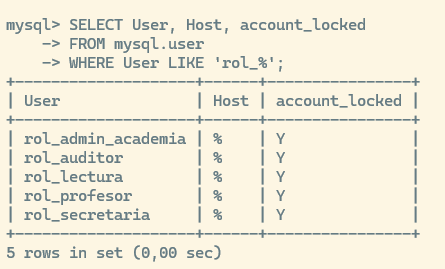
11 Conceder privilegios a los roles
MySQL permite conceder privilegios a nivel global, de base de datos, tabla, columna y rutina almacenada.
11.1 Rol de lectura
Podrá consultar todas las tablas de la base de datos:
GRANT SELECT
ON academia_it.*
TO 'rol_lectura';Significado: * SELECT \(\rightarrow\) privilegio * academia_it.* \(\rightarrow\) todos los objetos de academia_it * rol_lectura \(\rightarrow\) destinatario
11.2 Rol de profesor
El profesorado podrá consultar alumnos, asignaturas, profesores, cursos, curso_asignatura y matrículas. El permiso sobre notas se concede en el bloque siguiente.
GRANT SELECT ON academia_it.alumnos TO 'rol_profesor';
GRANT SELECT ON academia_it.asignaturas TO 'rol_profesor';
GRANT SELECT ON academia_it.profesores TO 'rol_profesor';
GRANT SELECT ON academia_it.cursos TO 'rol_profesor';
GRANT SELECT ON academia_it.curso_asignatura TO 'rol_profesor';
GRANT SELECT ON academia_it.matriculas TO 'rol_profesor';También podrá consultar e insertar notas:
GRANT SELECT, INSERT
ON academia_it.notas
TO 'rol_profesor';Únicamente podrá modificar las columnas nota y fecha_evaluacion:
GRANT UPDATE (nota, fecha_evaluacion)
ON academia_it.notas
TO 'rol_profesor';No le concedemos: DELETE, CREATE, DROP, ALTER. Por tanto, no podrá borrar notas ni modificar la estructura de las tablas.
Estos permisos se aplican a toda la tabla: no limitan al usuario a las notas de las asignaturas que imparte. El vínculo con un registro de profesores no se crea automáticamente al dar de alta una cuenta MySQL. En esta práctica estudiamos permisos por tabla y columna, no autorización por fila.
11.3 Rol de Secretaría
Secretaría podrá consultar, insertar y modificar información de los alumnos:
GRANT SELECT, INSERT
ON academia_it.alumnos
TO 'rol_secretaria';Solo podrá modificar estas columnas:
GRANT UPDATE (nombre, apellido1, apellido2, email)
ON academia_it.alumnos
TO 'rol_secretaria';También podrá consultar profesores, asignaturas, cursos, curso_asignatura y matrículas. La gestión de matrículas conserva sus permisos actuales: aquí solo añadimos consulta, no escritura.
GRANT SELECT ON academia_it.profesores TO 'rol_secretaria';
GRANT SELECT ON academia_it.asignaturas TO 'rol_secretaria';
GRANT SELECT ON academia_it.cursos TO 'rol_secretaria';
GRANT SELECT ON academia_it.curso_asignatura TO 'rol_secretaria';
GRANT SELECT ON academia_it.matriculas TO 'rol_secretaria';No podrá modificar notas: No se concede UPDATE sobre academia_it.notas.
11.4 Rol de auditoría
El auditor podrá consultar toda la base de datos:
GRANT SELECT
ON academia_it.*
TO 'rol_auditor';No podrá insertar, modificar ni eliminar registros. Aunque rol_auditor y rol_lectura tienen inicialmente los mismos privilegios, se mantienen separados porque representan funciones diferentes. En el futuro podrían evolucionar de manera distinta.
11.5 Rol de administrador de la base academia_it
GRANT ALL PRIVILEGES
ON academia_it.*
TO 'rol_admin_academia';Este rol recibe todos los privilegios aplicables sobre la base de datos academia_it. No recibe privilegios globales sobre *.*. Por tanto, no se convierte automáticamente en administrador completo del servidor MySQL.
12 Comprobar los privilegios de los roles
SHOW GRANTS FOR 'rol_lectura';
SHOW GRANTS FOR 'rol_profesor';
SHOW GRANTS FOR 'rol_secretaria';
SHOW GRANTS FOR 'rol_auditor';
SHOW GRANTS FOR 'rol_admin_academia';SHOW GRANTS permite revisar los privilegios y asignaciones de roles de una cuenta.

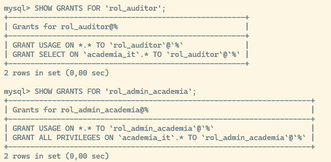
13 Crear usuarios con diferentes orígenes
Las contraseñas siguientes son únicamente ejemplos para el laboratorio. Deben adaptarse a la política de contraseñas configurada en el servidor.
13.1 Usuario que solo puede conectarse localmente
CREATE USER 'profesor_local'@'localhost'
IDENTIFIED BY 'Profesor_Local_2026!';Esta cuenta está pensada para utilizarse desde el propio servidor MySQL.
13.2 Usuario que puede conectarse desde una red completa
CREATE USER
'secretaria_red'@'10.0.20.0/255.255.255.0'
IDENTIFIED BY 'Secretaria_Red_2026!';Esta cuenta podrá autenticarse desde direcciones como \(10.0.20.10\), \(10.0.20.50\), \(10.0.20.200\). No coincidirá con \(10.0.21.10\) o \(192.168.1.20\).
En MySQL 8.0.23 o posterior también puede utilizarse:
CREATE USER 'secretaria_cidr'@'10.0.20.0/24'
IDENTIFIED BY 'Secretaria_CIDR_2026!';No crearemos esta segunda cuenta durante la práctica, porque representaría el mismo caso.
13.3 Usuario restringido a una IP concreta
CREATE USER 'auditor_ip'@'10.0.20.50'
IDENTIFIED BY 'Auditor_IP_2026!';Solo podrá autenticarse cuando la conexión proceda de \(10.0.20.50\).
13.4 Usuario autorizado desde cualquier origen
CREATE USER 'consulta_global'@'%'
IDENTIFIED BY 'Consulta_Global_2026!';Esta cuenta se crea para estudiar el comportamiento de %. Debe utilizarse únicamente en un entorno de laboratorio. Autorizar cualquier origen y exponer directamente el puerto \(3306\) a Internet sería una mala práctica.
13.5 Gestor local de la base de datos
CREATE USER 'gestor_local'@'localhost'
IDENTIFIED BY 'Gestor_Local_2026!';13.6 Usuario con privilegio directo
CREATE USER 'temporal_directo'@'localhost'
IDENTIFIED BY 'Temporal_Directo_2026!';Esta cuenta no recibirá un rol. Se utilizará para comparar los permisos directos con los permisos heredados mediante roles.
14 Asignar roles a los usuarios
14.1 Asignar el rol de profesor
GRANT 'rol_profesor'
TO 'profesor_local'@'localhost';14.2 Asignar el rol de Secretaría
GRANT 'rol_secretaria'
TO 'secretaria_red'@'10.0.20.0/255.255.255.0';14.3 Asignar el rol de auditor
GRANT 'rol_auditor'
TO 'auditor_ip'@'10.0.20.50';14.4 Asignar el rol de lectura
GRANT 'rol_lectura'
TO 'consulta_global'@'%';14.5 Asignar el rol de administrador de academia_it
GRANT 'rol_admin_academia'
TO 'gestor_local'@'localhost';Para asignar privilegios se utiliza GRANT ... ON ...; para asignar un rol se utiliza GRANT rol TO usuario, sin cláusula ON.
15 Activar los roles de forma predeterminada
Asignar un rol no implica necesariamente que se active al iniciar sesión. Un privilegio directo está siempre activo, pero un rol puede estar activo o inactivo según su configuración.
Configuramos los roles predeterminados:
SET DEFAULT ROLE 'rol_profesor'
TO 'profesor_local'@'localhost';
SET DEFAULT ROLE 'rol_secretaria'
TO 'secretaria_red'@'10.0.20.0/255.255.255.0';
SET DEFAULT ROLE 'rol_auditor'
TO 'auditor_ip'@'10.0.20.50';
SET DEFAULT ROLE 'rol_lectura'
TO 'consulta_global'@'%';
SET DEFAULT ROLE 'rol_admin_academia'
TO 'gestor_local'@'localhost';Otra posibilidad sería:
SET DEFAULT ROLE ALL
TO 'profesor_local'@'localhost';Esta variante activa de forma predeterminada todos los roles concedidos a la cuenta.
16 Conceder un privilegio directamente
Al usuario temporal_directo le concedemos directamente permiso de lectura sobre la tabla Alumnos:
GRANT SELECT
ON academia_it.alumnos
TO 'temporal_directo'@'localhost';No hemos creado ni asignado ningún rol. La diferencia es: * profesor_local \(\rightarrow\) recibe rol_profesor \(\rightarrow\) hereda sus privilegios * temporal_directo \(\rightarrow\) recibe SELECT directamente \(\rightarrow\) no depende de ningún rol
17 Revisar la configuración de las cuentas
17.1 Mostrar usuarios y orígenes
SELECT
User,
Host,
account_locked
FROM mysql.user
WHERE User IN (
'profesor_local',
'secretaria_red',
'auditor_ip',
'consulta_global',
'gestor_local',
'temporal_directo'
);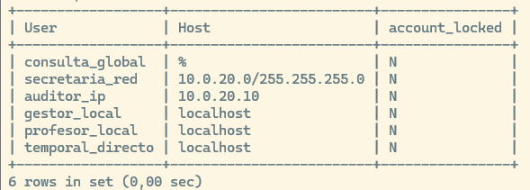
17.2 Mostrar los privilegios y roles concedidos
SHOW GRANTS FOR 'profesor_local'@'localhost';
SHOW GRANTS FOR 'secretaria_red'@'10.0.20.0/255.255.255.0';
SHOW GRANTS FOR 'auditor_ip'@'10.0.20.50';
SHOW GRANTS FOR 'consulta_global'@'%';
SHOW GRANTS FOR 'gestor_local'@'localhost';
SHOW GRANTS FOR 'temporal_directo'@'localhost';Para ver los privilegios heredados mediante un rol:
SHOW GRANTS
FOR 'profesor_local'@'localhost'
USING 'rol_profesor';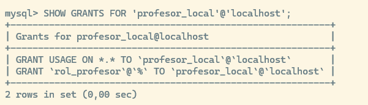
Nota: No es necesario ejecutar FLUSH PRIVILEGES después de utilizar CREATE USER, GRANT o REVOKE. Las sentencias de administración de cuentas comunican los cambios directamente al servidor; FLUSH PRIVILEGES se necesita principalmente cuando se modifican manualmente las tablas internas, algo que no debe hacerse en esta práctica.
18 Pruebas del usuario profesor_local
Salimos de MySQL:
EXIT;Nos conectamos desde el propio servidor e introducimos la contraseña:
mysql -u profesor_local -p18.1 Comprobar la identidad y el rol activo
SELECT
USER(),
CURRENT_USER(),
CURRENT_ROLE();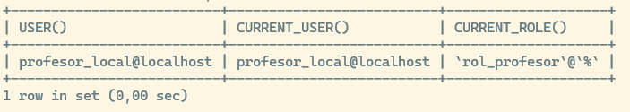
18.2 Consulta permitida
SELECT *
FROM academia_it.alumnos
LIMIT 3;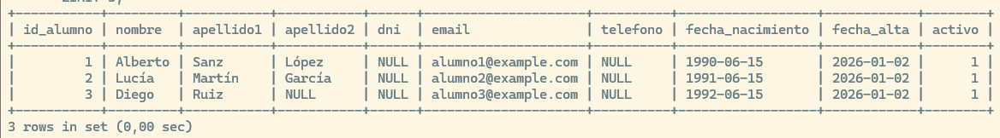
18.3 Consulta de notas permitida
SELECT *
FROM academia_it.notas
LIMIT 3;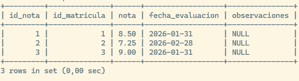
18.4 Inserción de una nota permitida
Seleccionamos una matrícula sin nota en esta misma sesión. Después abrimos una transacción; no añadimos alumnos ni cambiamos las matrículas. Como profesor_local:
SET @id_matricula_prueba = (
SELECT m.id_matricula
FROM academia_it.matriculas AS m
LEFT JOIN academia_it.notas AS n
ON n.id_matricula = m.id_matricula
WHERE n.id_nota IS NULL
ORDER BY m.id_matricula
LIMIT 1
);
SELECT @id_matricula_prueba; -- Debe ser un identificador, no NULL.
START TRANSACTION;
INSERT INTO academia_it.notas
(id_matricula, nota, fecha_evaluacion)
VALUES
(@id_matricula_prueba, 6.50, CURRENT_DATE);Resultado esperado: Inserción correcta.
18.5 Modificación de la columna nota
UPDATE academia_it.notas
SET nota = 7.00
WHERE id_matricula = @id_matricula_prueba;
SELECT id_matricula, nota
FROM academia_it.notas
WHERE id_matricula = @id_matricula_prueba;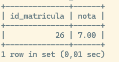
Resultado esperado: Modificación correcta.
18.6 Intentar modificar una columna no autorizada
UPDATE academia_it.notas
SET id_matricula = id_matricula
WHERE id_matricula = @id_matricula_prueba;Resultado esperado: Permiso UPDATE denegado para id_matricula. Aunque se intente conservar el mismo valor, sigue siendo una columna no autorizada.
18.7 Intentar borrar una nota
DELETE FROM academia_it.notas
WHERE id_matricula = @id_matricula_prueba;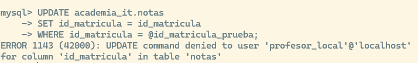
Resultado esperado: ERROR 1142: comando DELETE denegado.
18.8 Revertir las operaciones de prueba
ROLLBACK;
SELECT *
FROM academia_it.notas
WHERE id_matricula = @id_matricula_prueba;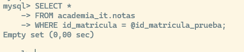
Resultado esperado: La consulta no devuelve filas: la inserción y el cambio de nota se han deshecho. El alumno y su matrícula siguen existiendo. No se crea ninguna tabla auxiliar.
19 Activar y desactivar roles durante una sesión
Seguimos conectados como profesor_local.
19.1 Desactivar todos los roles
SET ROLE NONE;Comprobamos:
SELECT CURRENT_ROLE();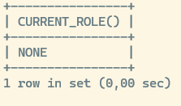
Resultado esperado: NONE.
Intentamos consultar:
SELECT *
FROM academia_it.alumnos;La consulta debería ser rechazada porque los privilegios procedían del rol.
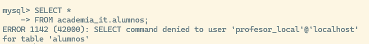
19.2 Restaurar el rol predeterminado
SET ROLE DEFAULT;Comprobamos y volvemos a consultar para verificar que vuelve a funcionar. MySQL permite modificar los roles activos de la sesión mediante SET ROLE, y CURRENT_ROLE() muestra cuáles están activos.
20 Pruebas del usuario secretaria_red
Desde un equipo cuya IP pertenezca a 10.0.20.0/24: Nota: cambiar 10.0.20.101 por la ip del servidor mysql
mysql -h 10.0.20.101 -u secretaria_red -pO si estamos usando el cliente de windows:
mysqlsh -h 10.0.20.101 -u secretaria_red -pVerificar identidad y rol:
SELECT USER(), CURRENT_USER(), CURRENT_ROLE();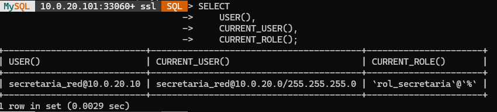
Consultar alumnos:
SELECT * FROM academia_it.alumnos LIMIT 3;(Debe funcionar)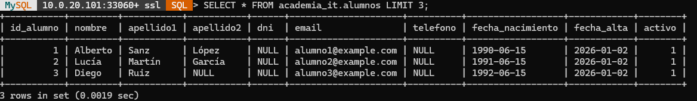
Insertar un alumno con transacción y
LAST_INSERT_ID().START TRANSACTION; INSERT INTO academia_it.alumnos (nombre, apellido1, apellido2, email, fecha_alta) VALUES ('Pedro', 'Ruiz', 'López', 'practica04.pedro@example.com', CURRENT_DATE); SET @id_alumno_prueba = LAST_INSERT_ID();Ver el registro del alumno que acabamos de crear:
SELECT * FROM academia_it.alumnos where id_alumno =@id_alumno_prueba;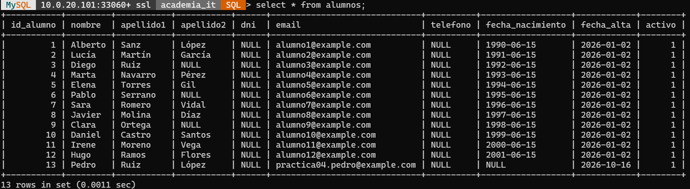
Modificar un correo electrónico (Debe funcionar).
UPDATE academia_it.alumnos SET email = 'practica04.pedro.ruiz@example.com' WHERE id_alumno = @id_alumno_prueba;Intentar modificar una nota (ERROR:
UPDATEdenegado).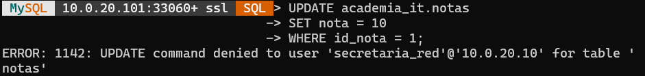
Intentar eliminar un alumno (ERROR:
DELETEdenegado).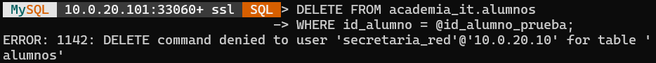
ROLLBACK;para limpiar los cambios de prueba.ROLLBACK;Comprobación del rollback;
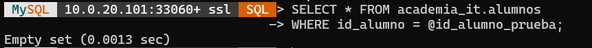
21 Pruebas del usuario restringido a una IP
Nuestro equipo de auditoría nos comunica que ha cambiado al auditor su ip ya no es '10.0.20.50' sino '10.0.20.10', así que en lugar de borrar el usuario, crear uno nuevo y asignarle de nuevo los permisos, vamos a renombrar el usuario:
RENAME USER 'auditor_ip'@'10.0.20.50' TO 'auditor_ip'@'10.0.20.10';También tendremos que proporcionarle una nueva contraseña por seguridad
ALTER USER 'auditor_ip'@'10.0.20.10' IDENTIFIED BY 'NuevaContraseñaSegura123!';Desde 10.0.20.10:
mysqlsh -h 10.0.20.101 -u auditor_ip -pConsulta permitida:
SELECT * FROM academia_it.notas;Modificación denegada:
UPDATEsobre notas debe ser rechazada.Modificación denegada porque el rol solo contiene
SELECT.UPDATE academia_it.notas SET nota = 10 WHERE id_nota = 1;ERROR: 1142: UPDATE command denied to user 'auditor_ip'@'10.0.20.10' for table 'notas'Prueba desde otra IP: Intentar conectar como
auditor_ipdesde10.0.20.60será rechazado porque no existe la cuenta para ese origen.
22 Pruebas del usuario autorizado desde cualquier origen
Desde cualquier equipo que tenga conectividad y sea admitido por el firewall:
mysqlsh -h 10.0.20.101 -u consulta_global -pConsulta permitida:
SELECT * FROM academia_it.profesores;Inserción denegada:
INSERTen profesores debe ser rechazada porque el rol solo contieneSELECT.INSERT INTO academia_it.profesores (nombre, apellido1, email, fecha_alta) VALUES ('Profesor', 'Prueba', 'practica04.profesor@example.com', CURRENT_DATE);ERROR: 1142: INSERT command denied to user 'consulta_global'@'10.0.20.10' for table 'profesores'
22.1 Conclusión importante
'@'%'no significa: Puede hacer cualquier cosa.- Significa: Puede intentar conectarse desde cualquier origen accesible. Las acciones que puede realizar dependen de sus privilegios.
23 Pruebas del gestor local
Nos conectamos desde el servidor:
mysql -u gestor_local -pComprobamos:
SELECT CURRENT_ROLE();
SHOW GRANTS;
SHOW GRANTS FOR 'gestor_local'@'localhost' USING 'rol_admin_academia';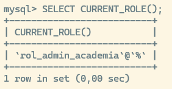
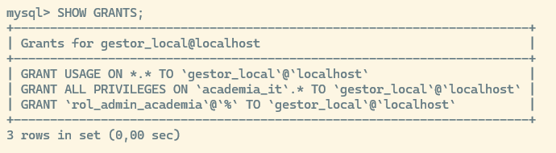
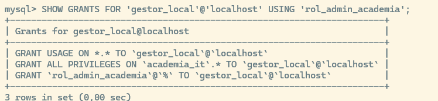
Resultado esperado: privilegios de administración sobre academia_it.*, incluidos CREATE, ALTER y DROP. No ejecutamos cambios estructurales sobre el modelo. Probamos una modificación reversible con START TRANSACTION y ROLLBACK.
Intentamos crear otro usuario:
CREATE USER 'usuario_prueba'@'localhost'
IDENTIFIED BY 'Usuario_Prueba_2026!';ERROR 1227 (42000): Access denied; you need (at least one of) the CREATE USER privilege(s) for this operation
Debe ser rechazado porque rol_admin_academia tiene privilegios sobre academia_it.* pero no posee el privilegio global CREATE USER.
Probamos una modificación reversible sobre una tabla existente:
START TRANSACTION;
SET @id_profesor_prueba =
(SELECT MIN(id_profesor)
FROM academia_it.profesores);
UPDATE academia_it.profesores
SET nombre = 'Profesor de prueba'
WHERE id_profesor = @id_profesor_prueba;
SELECT id_profesor, nombre
FROM academia_it.profesores
WHERE id_profesor = @id_profesor_prueba;
ROLLBACK;24 Pruebas del usuario con privilegio directo
Nos conectamos directamente desde el servidor
mysql -u temporal_directo -pComprobamos el rol: devuelve
NONE.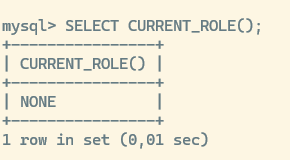
SELECT * FROM academia_it.alumnos;funciona porque el privilegioSELECTfue concedido directamente.SELECT * FROM academia_it.notas;falla porque el usuario solo tiene permiso sobre Alumnos.ERROR 1142 (42000): SELECT command denied to user 'temporal_directo'@'localhost' for table 'notas'
25 Asignar varios roles a un mismo usuario
Vamos a conceder a profesor_local también el rol de lectura:
GRANT 'rol_lectura'
TO 'profesor_local'@'localhost';
SET DEFAULT ROLE
'rol_profesor',
'rol_lectura'
TO 'profesor_local'@'localhost';Volvemos a conectarnos como profesor_local y comprobamos con SELECT CURRENT_ROLE();. La cuenta tendrá los privilegios combinados de forma aditiva.
mysql -u profesor_local -pSELECT CURRENT_ROLE();
SHOW GRANTS FOR 'profesor_local'@'localhost';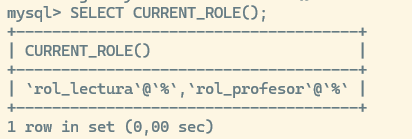
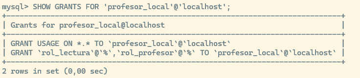
Comprobamos que podemos ver la tabla profesores:
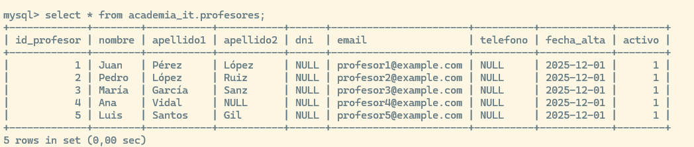
26 Revocar privilegios
26.1 Retirar un privilegio a un rol
Como administrador sudo mysql:
REVOKE INSERT
ON academia_it.notas
FROM 'rol_profesor';Comprobamos:
SHOW GRANTS FOR 'rol_profesor';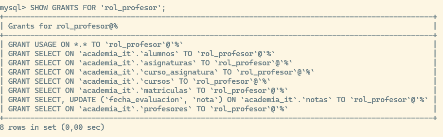
Reconectad profesor_local, verificad CURRENT_ROLE() y revisad SHOW GRANTS ... USING. INSERT ya no estará disponible por este rol.
26.2 Volver a concederlo
GRANT INSERT
ON academia_it.notas
TO 'rol_profesor';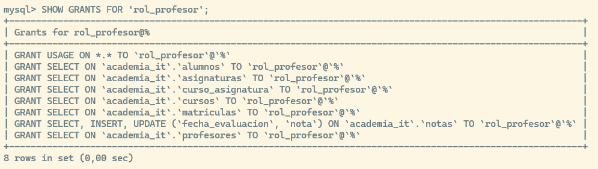
Vemos que no podemos revocar el privilegio directamente al usuario, ya que éste ha sido concedido a través del rol:
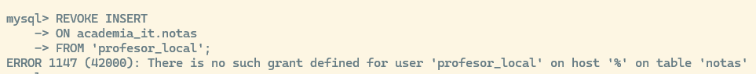
27 Revocar un rol a un usuario
Retiramos el rol de auditor:
REVOKE 'rol_auditor'
FROM 'auditor_ip'@'10.0.20.10';La cuenta sigue existiendo y puede autenticarse desde su IP, pero ya no dispone de los privilegios del rol. Desconectad y reconectad al auditor antes de comprobarlo.
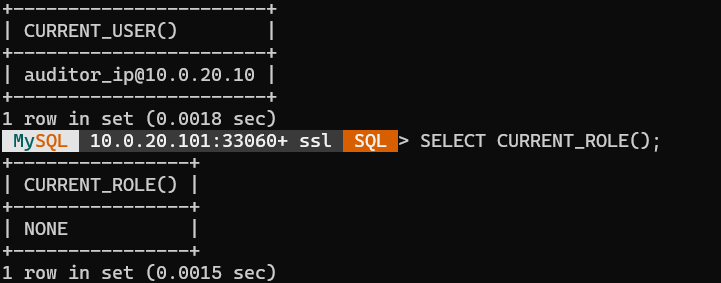
Volvemos a asignarlo:
GRANT 'rol_auditor'
TO 'auditor_ip'@'10.0.20.10';
SET DEFAULT ROLE 'rol_auditor'
TO 'auditor_ip'@'10.0.20.10';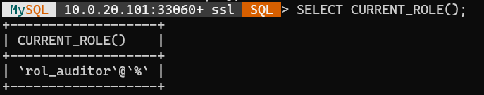
Desde la cuenta de administrador no podemos desactivar el rol de un usuario para su sessión activa. Recordemos que el propio usuario sí que puede hacerlo mediante
SET ROLE NONE;Pero desde otra cuenta no podemos hacer:
SET ROLE NONE TO 'auditor_ip'@'10.0.20.10'; ---ERROR 1064 (42000): You have an error in your SQL syntax; check the manual that corresponds to your MySQL server version for the right syntax to use near 'TO 'auditor_ip'@'10.0.20.10'' at line 128 Bloquear y desbloquear una cuenta
Podemos bloquear temporalmente una cuenta sin eliminarla:
ALTER USER 'consulta_global'@'%' ACCOUNT LOCK;Intentamos conectarnos y comprobamos que la autenticación se rechaza.
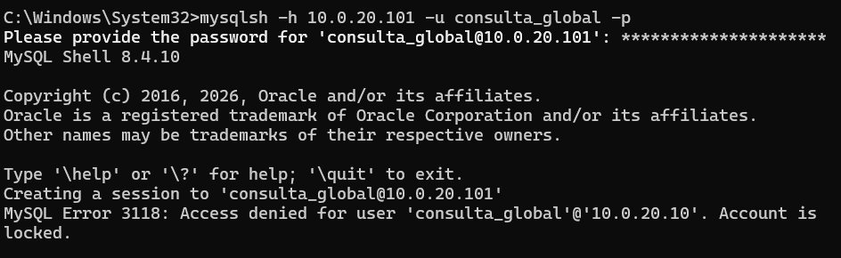
Para desbloquearla:
ALTER USER 'consulta_global'@'%' ACCOUNT UNLOCK;29 Cambiar una contraseña
ALTER USER 'profesor_local'@'localhost'
IDENTIFIED BY 'Nueva_Clave_Profesor_2026!';A partir de ese momento habrá que utilizar la nueva contraseña.
30 Protección opcional mediante TLS
Para exigir una conexión cifrada a la cuenta accesible desde cualquier origen:
ALTER USER 'consulta_global'@'%' REQUIRE SSL;Después de conectarnos, podemos comprobar el cifrado con:
SHOW STATUS LIKE 'Ssl_cipher';Para retirar temporalmente este requisito:
ALTER USER 'consulta_global'@'%' REQUIRE NONE;31 Matriz final de comprobación
| Usuario | Conexión admitida | SELECT | INSERT | UPDATE | DELETE | CREATE |
|---|---|---|---|---|---|---|
profesor_local |
Solo local | Sí | Solo Notas | nota y fecha | No | No |
secretaria_red |
Red \(10.0.20.0/24\) | Sí, limitado | Alumnos | Columnas concretas de Alumnos | No | No |
auditor_ip |
Solo \(10.0.20.10\) | Sí | No | No | No | No |
consulta_global |
Cualquier origen accesible | Sí | No | No | No | No |
gestor_local |
Solo local | Sí | Sí | Sí | Sí | Sí, en academia_it |
temporal_directo |
Solo local | Solo Alumnos | No | No | No | No |
32 Errores habituales
32.1 Error 1: el usuario existe, pero no puede conectarse remotamente
Comprobar: SELECT User, Host FROM mysql.user WHERE User = 'secretaria_red';,
después revisar sudo ss -lntp | grep 3306 y sudo ufw status.
Puede existir correctamente la cuenta, pero MySQL estar escuchando únicamente en 127.0.0.1.
32.2 Error 2: el usuario se conecta, pero no puede consultar
Comprobar SELECT CURRENT_ROLE();. Si devuelve NONE, activamos el rol con SET ROLE DEFAULT;.
32.3 Error 3: se creó ‘usuario’@‘localhost’, pero se intenta acceder remotamente
Esta cuenta no equivale a 'usuario'@'%'. Debe crearse una cuenta correspondiente al origen remoto.
32.4 Error 4: utilizar únicamente el nombre del usuario
No debe confundirse CREATE USER 'ana'; con CREATE USER 'ana'@'localhost';. Cuando se omite el componente @host, MySQL interpreta el nombre como equivalente a 'ana'@'%'.
32.5 Error 5: conceder privilegios excesivos
No deberíamos utilizar indiscriminadamente GRANT ALL PRIVILEGES ON *.* TO 'usuario'@'%' WITH GRANT OPTION;, ya que va en contra del principio de mínimo privilegio.
33 Preguntas de reflexión
- ¿Por qué
'ana'@'localhost'y'ana'@'10.0.20.10'son cuentas diferentes? - ¿Qué diferencia existe entre conceder un privilegio directamente y concederlo mediante un rol?
- ¿Por qué un usuario puede conectarse correctamente y, aun así, recibir un error al ejecutar
SELECT? - ¿Qué diferencia existe entre
SET ROLE NONEyREVOKE rol FROM usuario? - ¿Qué riesgos presenta utilizar
'usuario'@'%'? - ¿Por qué
rol_admin_academiano puede crear usuarios del servidor? - ¿Qué ventaja ofrece conceder
UPDATEsolamente sobre determinadas columnas? - ¿Qué tres elementos deben comprobarse cuando falla una conexión remota?
- ¿Por qué no es necesario ejecutar
FLUSH PRIVILEGESdespués deGRANT? - ¿Qué ocurriría si retiramos un privilegio al rol utilizado por veinte usuarios?
34 Actividad final propuesta
Crear una cuenta denominada coordinador que cumpla estas condiciones:
* Solo puede conectarse desde \(10.0.20.10\).
* Puede consultar todas las tablas.
* Puede insertar y modificar profesores.
* Puede modificar únicamente id_profesor en curso_asignatura para reasignar quién imparte una asignatura de un curso.
* No puede eliminar registros.
* No puede crear, modificar ni eliminar tablas.
* Debe recibir sus privilegios mediante un rol llamado rol_coordinador.
Habrá que entregar:
1. La sentencia de creación del rol.
CREATE ROLE ‘rol_coordinador’;
2. Los privilegios concedidos al rol.
3. La sentencia de creación del usuario.
4. La asignación del rol.
5. La configuración del rol predeterminado.
6. Las consultas utilizadas para comprobar los permisos.
7. Una operación permitida y otra denegada.
8. El resultado de SHOW GRANTS FOR 'coordinador'@'10.0.20.10';.
La prueba de reasignación debe usar un id_profesor existente y terminar con ROLLBACK. No se modifica id_profesor en asignaturas, porque esa columna no pertenece al catálogo de Academia IT.
35 Limpieza del entorno
La limpieza elimina únicamente las cuentas y roles de esta práctica. Conservamos academia_it, sus siete tablas y los datos de la práctica anterior. Cerrad las sesiones de prueba antes de ejecutarla.
35.1 Eliminar los usuarios
DROP USER IF EXISTS
'profesor_local'@'localhost',
'secretaria_red'@'10.0.20.0/255.255.255.0',
'auditor_ip'@'10.0.20.50',
'consulta_global'@'%',
'gestor_local'@'localhost',
'temporal_directo'@'localhost',
'coordinador'@'10.0.20.60';35.2 Eliminar los roles
DROP ROLE IF EXISTS
'rol_lectura',
'rol_profesor',
'rol_secretaria',
'rol_auditor',
'rol_admin_academia',
'rol_coordinador';35.3 Comprobar que Academia IT se conserva
USE academia_it;
SHOW TABLES;
SELECT COUNT(*) AS matriculas FROM academia_it.matriculas;
SELECT COUNT(*) AS notas FROM academia_it.notas;36 Conclusión
En esta práctica hemos aplicado los tres conceptos principales:
* Privilegio: Acción disponible en MySQL (SELECT, INSERT, UPDATE, DELETE…)
* Permiso: Privilegio aplicado a una cuenta o rol sobre una base de datos, tabla o columna
* Rol: Conjunto reutilizable de privilegios asignable a uno o varios usuarios
Además, hemos comprobado que la autorización en MySQL depende de dos dimensiones distintas: ¿Desde dónde puede conectarse? y ¿Qué puede hacer una vez conectado?
36.1 Referencias de MySQL
- Roles: https://dev.mysql.com/doc/refman/8.0/en/roles.html
- GRANT y privilegios por columna: https://dev.mysql.com/doc/refman/8.4/en/grant.html
- SHOW GRANTS: https://dev.mysql.com/doc/refman/8.4/en/show-grants.html
- Nombres de cuenta y origen: https://dev.mysql.com/doc/refman/8.0/en/account-names.html
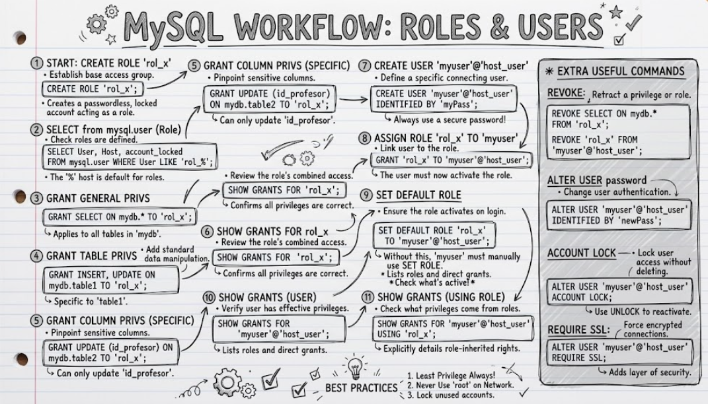